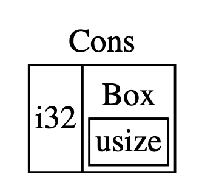

Box<T>
Tất cả giá trị trên Rust mặc định đều được allocated trên stack. Giá trị có thể được boxed, allocated trên heap bằng cách sử dụng Box<T>.
Box<T> là một smart pointer của Rust cho phép allocated trên heap giá trị có kiểu T, còn pointer trỏ đến giá trị đó sẽ nằm trên stack.
Xem thêm về stack và heap tại đây.
Khi một Box nằm ngoài scope, destructor sẽ được gọi để giải phóng bộ nhớ. Sử dụng Box không ảnh hưởng nhiều đến performance do Box không bổ sung thêm thông tin metadata nào khác.
fn main() { let b = Box::new(5); println!("b = {}", b); }
Ở ví dụ trên, chúng ta định nghĩa b có giá trị của Box đang trỏ đến giá trị 5 và 5 đang được allocated trên heap. Chương trình sẽ in ra b = 5 , cách truy cập giống hệt cách allocated trên stack. Giống như owned value, khi box out of scope, cuối hàm main sẽ được giải phóng.
Lưu một giá trị đơn giản trên Box không mang lại lợi ích gì cả. Chúng ta sẽ thường dùng Box trong các trường hợp sau:
- Khi bạn có một type mà không biết trước size ở compile time, và bạn cần sử dụng type đó trong một số ngữ cảnh cần biết trước chính xác data size (ví dụ như recursive type).
- Bạn cần xử lý các kiểu dữ liệu nhưng chỉ muốn quan tâm đến type đó được implement trait nào.
- Khi bạn có một lượng lớn data cần transfer ownership nhưng muốn chắc là data sẽ không bị copy, sẽ ảnh hưởng đến hiệu năng và làm tăng bộ nhớ.
Chúng ta sẽ làm rõ ngay sau đây.
1. Recursive types với Box
Tại compile time, Rust cần biết cần phải biết cần bao nhiêu bộ nhớ. Một trong những kiểu dữ liệu mà Rust không biết trước được size là recursive type. Giá trị có thể là một phần của giá trị khác có cùng một kiểu. Bởi vì nesting of values theo lý thuyết có thể kéo dài đến vô hạn. Trong trường hợp này ta có thể dùng Box.
Cons list là một kiểu dữ liệu phổ biến trong các ngôn ngữ functional programming, là một ví dụ của recursive type. Cons là viết tắt của "construct function". Mỗi item trong cons list có 2 thành phần: giá trị của item hiện tại và next item. Item cuối cùng có giá trị Nil và không có next item.
#![allow(unused)] fn main() { enum List { Cons(i32, List), Nil, } }
Bây giờ hãy sử dụng List type để lưu list 1, 2, 3 như sau
enum List { Cons(i32, List), Nil, } use List::{Cons, Nil}; fn main() { let list = Cons(1, Cons(2, Cons(3, Nil))); }
Nếu chúng ta compile đoạn code trên, compiler sẽ báo như sau:
$ cargo run
Compiling cons-list v0.1.0 (file:///duyet/cons-list)
error[E0072]: recursive type `List` has infinite size
--> src/main.rs:1:1
|
1 | enum List {
| ^^^^^^^^^ recursive type has infinite size
2 | Cons(i32, List),
| ---- recursive without indirection
|
help: insert some indirection (e.g., a `Box`, `Rc`, or `&`) to make `List` representable
|
2 | Cons(i32, Box<List>),
| ++++ +
error[E0391]: cycle detected when computing drop-check constraints for `List`
--> src/main.rs:1:1
|
1 | enum List {
| ^^^^^^^^^
|
= note: ...which immediately requires computing drop-check constraints for `List` again
= note: cycle used when computing dropck types for `Canonical { max_universe: U0, variables: [], value: ParamEnvAnd { param_env: ParamEnv { caller_bounds: [], reveal: UserFacing }, value: List } }`
Some errors have detailed explanations: E0072, E0391.
For more information about an error, try `rustc --explain E0072`.
error: could not compile `cons-list` due to 2 previous errors
Compiler nói rằng kiểu dữ liệu này has infinite size. Bởi vì List có variant là List::Cons chứa trực tiếp một List khác trong chính nó. Do đó Rust sẽ không biết được sẽ cần bao nhiêu bộ nhớ để lưu giá trị của List.
Dừng lại một chút để xem Rust tính toán bộ nhớ của một kiểu dữ liệu bình thường như thế nào:
#![allow(unused)] fn main() { enum Message { Quit, Move { x: i32, y: i32 }, Write(String), ChangeColor(i32, i32, i32), } }
Để xác định bao nhiêu bộ nhớ cần để allocate cho Message, Rust sẽ kiểm tra từng variant (biến thể của enum) để xem variant nào cần bộ nhớ nhiều nhất. Rust thấy rằng Message::Quit không cần, Message::Move phải cần ít nhất bộ nhớ để lưu hai giá trị i32. Tương tự với các variant còn lại. Bởi vì một thời điểm cho có một variant được sử dụng, do đó bộ nhớ tối đa mà Message cần sẽ là một nhớ cần để lưu trữ variant lớn nhất.
Quay lại với Cons List, bộ nhớ mà Rust tính toán được có thể đến vô tận.

Theo như gợi ý của compiler, chúng ta có thể sử dụng Box<T> để có một Recursive Type với một kích thước bộ nhớ xác định:
help: insert some indirection (e.g., a `Box`, `Rc`, or `&`) to make `List` representable
|
2 | Cons(i32, Box<List>),
| ++++ +
Bởi vì Box<T> là một pointer, Rust luôn biết chính xác bao nhiêu bộ nhớ mà một Box<T> pointer cần.

Chương trình của chúng ta lúc này sẽ là:
enum List { Cons(i32, Box<List>), Nil, } use List::{Cons, Nil}; fn main() { let list = Cons(1, Box::new(Cons(2, Box::new(Cons(3, Box::new(Nil)))))); }
2. Sử dụng trait objects cho phép sử dụng giá trị từ nhiều kiểu dữ liệu khác nhau
Một giới hạn của Vec là chỉ có thể lưu trữ các thành phần có kiểu dữ liệu giống nhau mà thôi. Ta có thể lách luật trong một số trường hợp bằng cách sử dụng enum có nhiều variant giữ nhiều kiểu dữ liệu khác nhau
#![allow(unused)] fn main() { enum Cell { Int(i32), Float(f64), Text(String), } let row = vec![ Cell::Int(3), Cell::Text(String::from("blue")), Cell::Float(10.12), ]; }
Tuy nhiên, trong một số trường hợp mong muốn thư viện của chúng ta có thể dễ dàng được mở rộng một số trường hợp khác. Chúng ta đã biết được định nghĩa Trait cho các Common Behavior. Trong Rust, trait định nghĩa các hành vi, và các hành vi này có thể được impl cho struct hoặc enum, để giúp một struct hoặc enum mang đặc tính các hành vi đó.
#![allow(unused)] fn main() { pub trait Draw { fn draw(&self); } pub struct Screen { pub components: Vec<Box<dyn Draw>>, } impl Screen { pub fn run(&self) { for component in self.components.iter() { component.draw(); } } } }
Hãy xem ví dụ trên, ta có components có kiểu dữ liệu là Vec<T> với <T> là một Box<dyn Draw>. Chúng ta đã định nghĩa một vector chứa kiểu dữ liệu là một trait object.
Một trait object được định nghĩa bằng cách định nghĩa pointer, ví dụ như &dyn T hoặc Box<dyn T> smart pointer.
Một trait object sẽ trỏ đến:
- một instance của một kiểu dữ liệu có implement trait của chúng ta
- và một bảng ghi look up đến các trait methods lúc runtime.
Sử dụng trait object, Rust type system sẽ chắc chắn là tại thời điểm compile, tất cả các giá trị sử dụng tại ngữ cảnh đó đều phải được implement trai của trait object đó. Nói tóm lại, chúng ta sẽ không cần quan tâm đó là kiểu dữ liệu gì, chỉ cần biết kiểu dữ liệu đó phải được implement trait chúng ta cần là được.
Lý do cần sử dụng pointer reference & hoặc smart pointer Box<T> bởi vì compiler không biết chính xác về kiểu dữ liệu, Rust sẽ dùng pointer của trait object để biết được method nào để cần được gọi. Xem thêm về Trait Objects Perform Dynamic Dispatch.